Summarise y values at unique/binned x
Source:R/stat-summary-bin.R, R/stat-summary.r
stat_summary.Rdstat_summary() operates on unique x or y; stat_summary_bin()
operates on binned x or y. They are more flexible versions of
stat_bin(): instead of just counting, they can compute any
aggregate.
stat_summary_bin( mapping = NULL, data = NULL, geom = "pointrange", position = "identity", ..., fun.data = NULL, fun = NULL, fun.max = NULL, fun.min = NULL, fun.args = list(), bins = 30, binwidth = NULL, breaks = NULL, na.rm = FALSE, orientation = NA, show.legend = NA, inherit.aes = TRUE, fun.y, fun.ymin, fun.ymax ) stat_summary( mapping = NULL, data = NULL, geom = "pointrange", position = "identity", ..., fun.data = NULL, fun = NULL, fun.max = NULL, fun.min = NULL, fun.args = list(), na.rm = FALSE, orientation = NA, show.legend = NA, inherit.aes = TRUE, fun.y, fun.ymin, fun.ymax )
Arguments
| mapping | Set of aesthetic mappings created by |
|---|---|
| data | The data to be displayed in this layer. There are three options: If A A |
| geom | Use to override the default connection between
|
| position | Position adjustment, either as a string, or the result of a call to a position adjustment function. |
| ... | Other arguments passed on to |
| fun.data | A function that is given the complete data and should
return a data frame with variables |
| fun.min, fun, fun.max | Alternatively, supply three individual functions that are each passed a vector of values and should return a single number. |
| fun.args | Optional additional arguments passed on to the functions. |
| bins | Number of bins. Overridden by |
| binwidth | The width of the bins. Can be specified as a numeric value
or as a function that calculates width from unscaled x. Here, "unscaled x"
refers to the original x values in the data, before application of any
scale transformation. When specifying a function along with a grouping
structure, the function will be called once per group.
The default is to use the number of bins in The bin width of a date variable is the number of days in each time; the bin width of a time variable is the number of seconds. |
| breaks | Alternatively, you can supply a numeric vector giving
the bin boundaries. Overrides |
| na.rm | If |
| orientation | The orientation of the layer. The default ( |
| show.legend | logical. Should this layer be included in the legends?
|
| inherit.aes | If |
| fun.ymin, fun.y, fun.ymax | Deprecated, use the versions specified above instead. |
Orientation
This geom treats each axis differently and, thus, can thus have two orientations. Often the orientation is easy to deduce from a combination of the given mappings and the types of positional scales in use. Thus, ggplot2 will by default try to guess which orientation the layer should have. Under rare circumstances, the orientation is ambiguous and guessing may fail. In that case the orientation can be specified directly using the orientation parameter, which can be either "x" or "y". The value gives the axis that the geom should run along, "x" being the default orientation you would expect for the geom.
Aesthetics
stat_summary() understands the following aesthetics (required aesthetics are in bold):
xygroup
Learn more about setting these aesthetics in vignette("ggplot2-specs").
Summary functions
You can either supply summary functions individually (fun,
fun.max, fun.min), or as a single function (fun.data):
- fun.data
Complete summary function. Should take numeric vector as input and return data frame as output
- fun.min
min summary function (should take numeric vector and return single number)
- fun
main summary function (should take numeric vector and return single number)
- fun.max
max summary function (should take numeric vector and return single number)
A simple vector function is easiest to work with as you can return a single
number, but is somewhat less flexible. If your summary function computes
multiple values at once (e.g. min and max), use fun.data.
fun.data will receive data as if it was oriented along the x-axis and
should return a data.frame that corresponds to that orientation. The layer
will take care of flipping the input and output if it is oriented along the
y-axis.
If no aggregation functions are supplied, will default to
mean_se().
See also
geom_errorbar(), geom_pointrange(),
geom_linerange(), geom_crossbar() for geoms to
display summarised data
Examples
d <- ggplot(mtcars, aes(cyl, mpg)) + geom_point() d + stat_summary(fun.data = "mean_cl_boot", colour = "red", size = 2)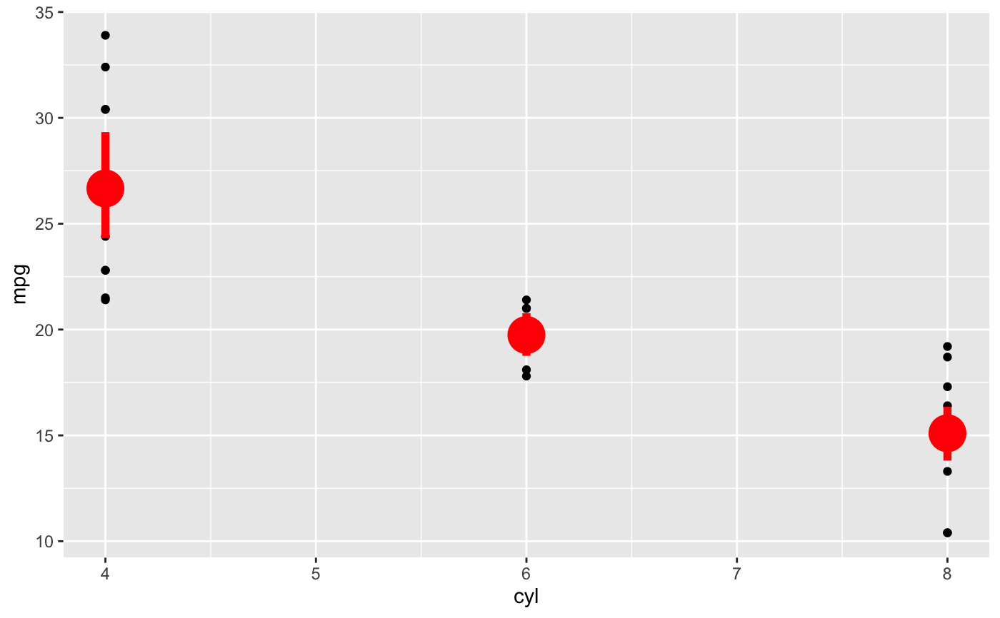# Orientation follows the discrete axis ggplot(mtcars, aes(mpg, factor(cyl))) + geom_point() + stat_summary(fun.data = "mean_cl_boot", colour = "red", size = 2)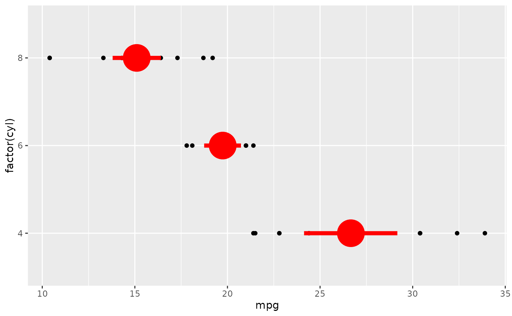# You can supply individual functions to summarise the value at # each x: d + stat_summary(fun = "median", colour = "red", size = 2, geom = "point")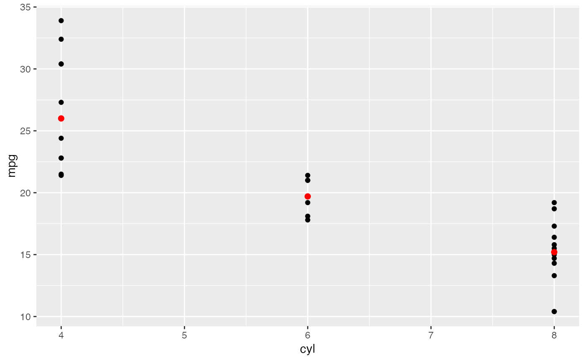d + stat_summary(fun = "mean", colour = "red", size = 2, geom = "point")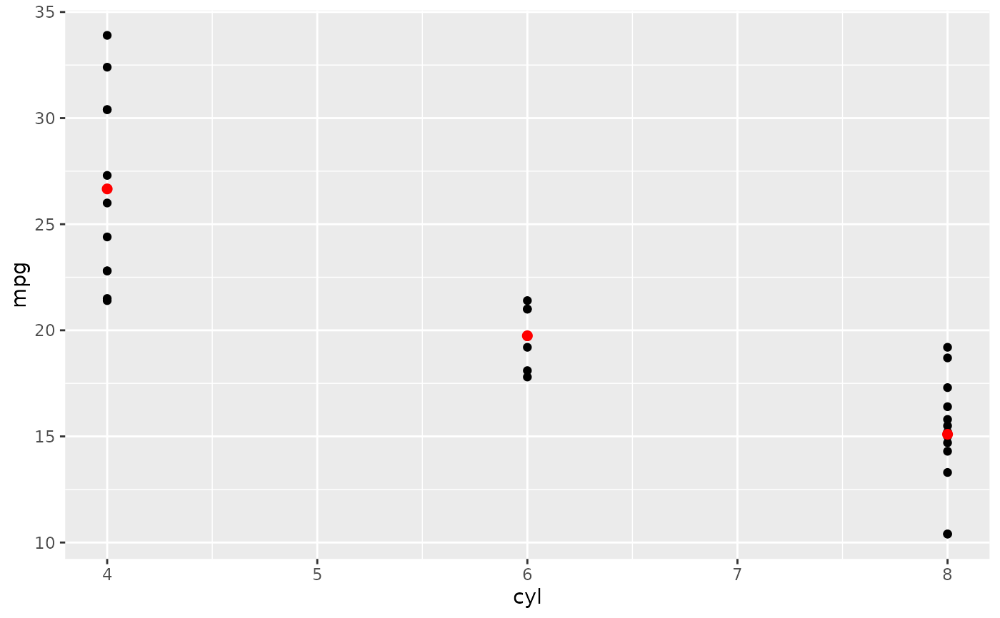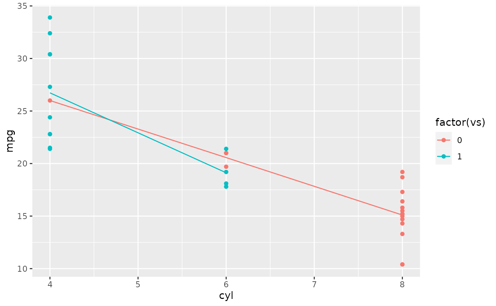d + stat_summary(fun = mean, fun.min = min, fun.max = max, colour = "red")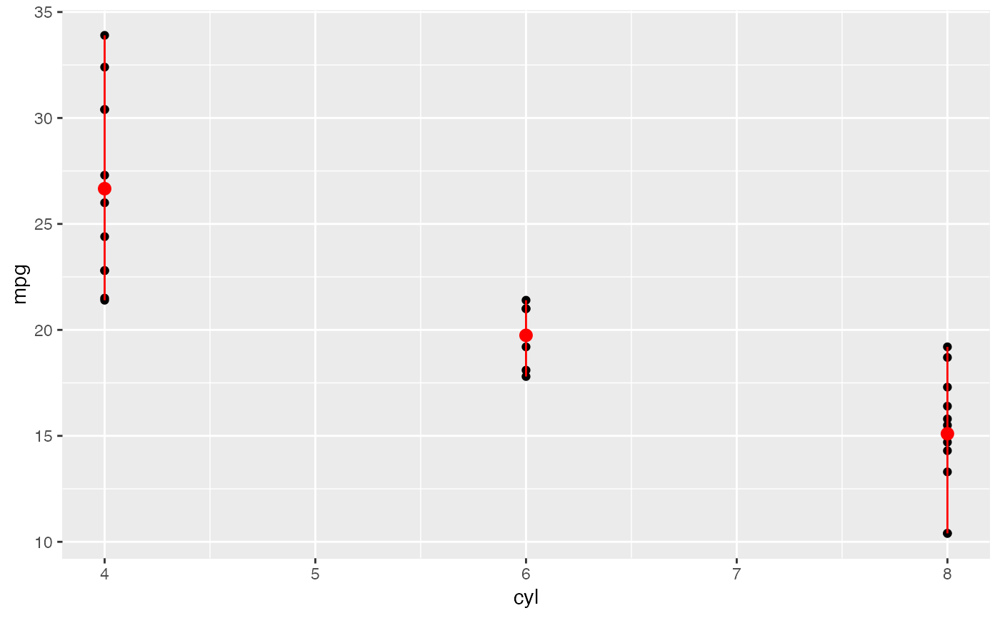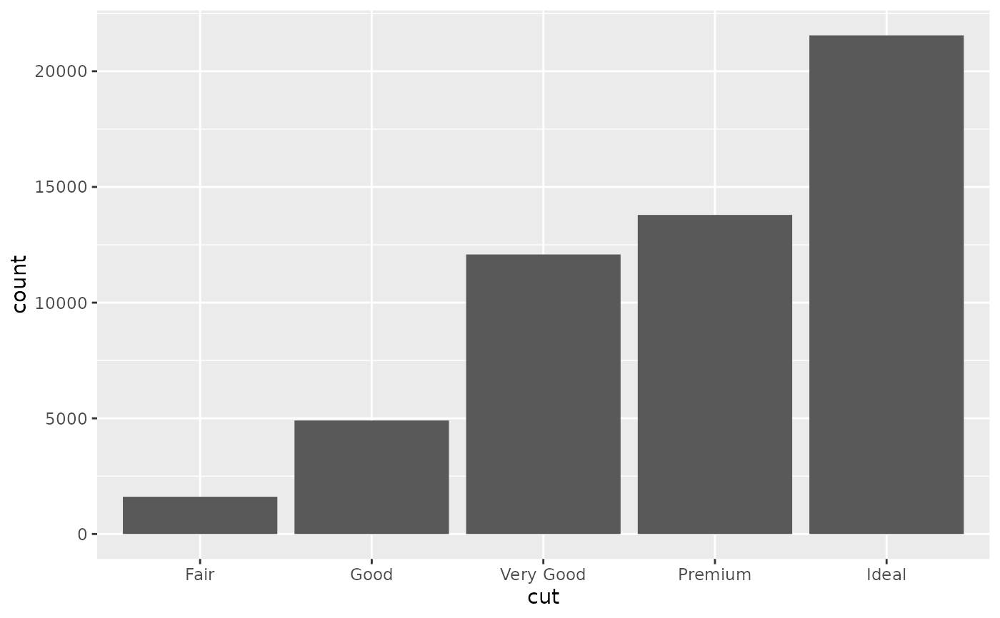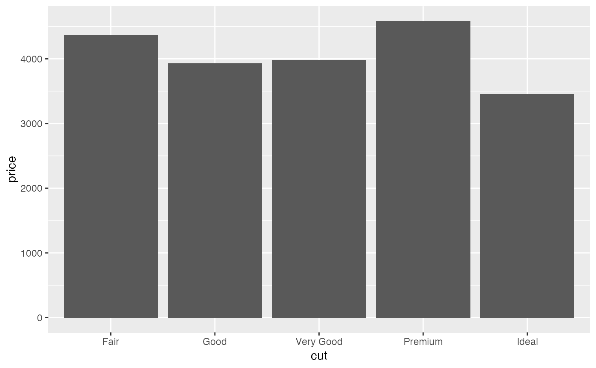# Orientation of stat_summary_bin is ambiguous and must be specified directly ggplot(diamonds, aes(carat, price)) + stat_summary_bin(fun = "mean", geom = "bar", orientation = 'y')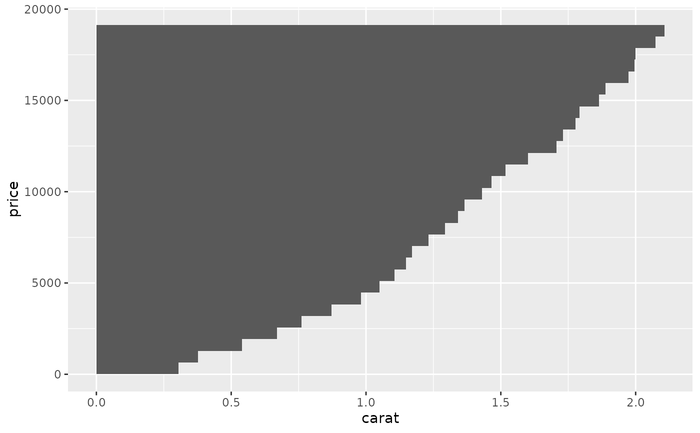# \donttest{ # Don't use ylim to zoom into a summary plot - this throws the # data away p <- ggplot(mtcars, aes(cyl, mpg)) + stat_summary(fun = "mean", geom = "point") p#> Warning: Removed 9 rows containing non-finite values (stat_summary).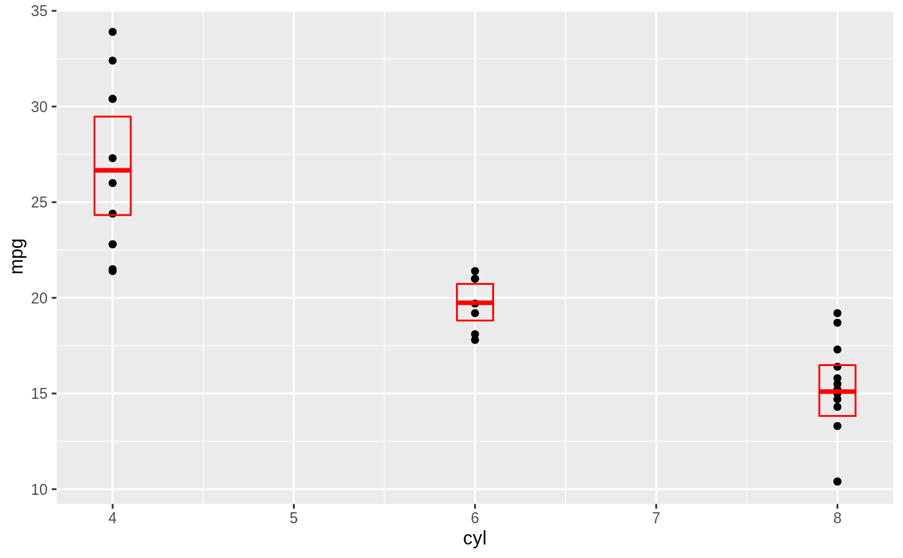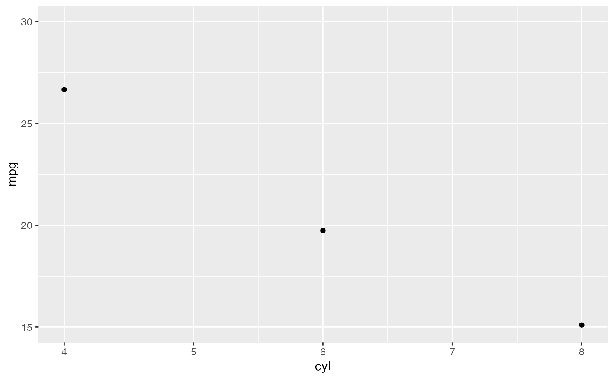# A set of useful summary functions is provided from the Hmisc package: stat_sum_df <- function(fun, geom="crossbar", ...) { stat_summary(fun.data = fun, colour = "red", geom = geom, width = 0.2, ...) } d <- ggplot(mtcars, aes(cyl, mpg)) + geom_point() # The crossbar geom needs grouping to be specified when used with # a continuous x axis. d + stat_sum_df("mean_cl_boot", mapping = aes(group = cyl))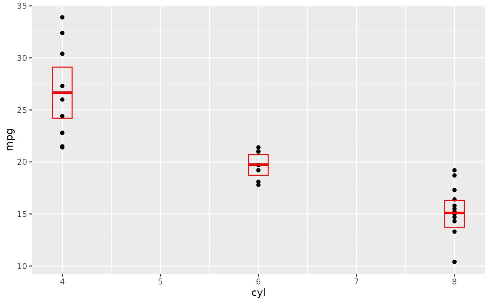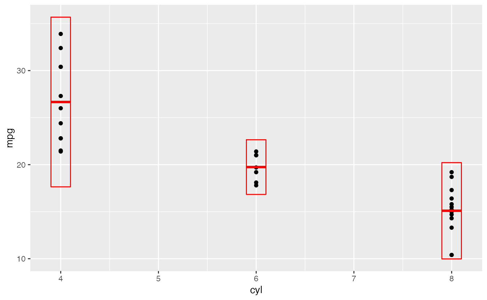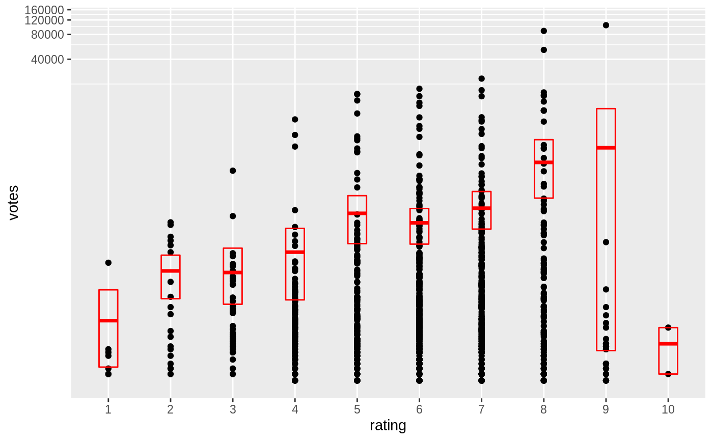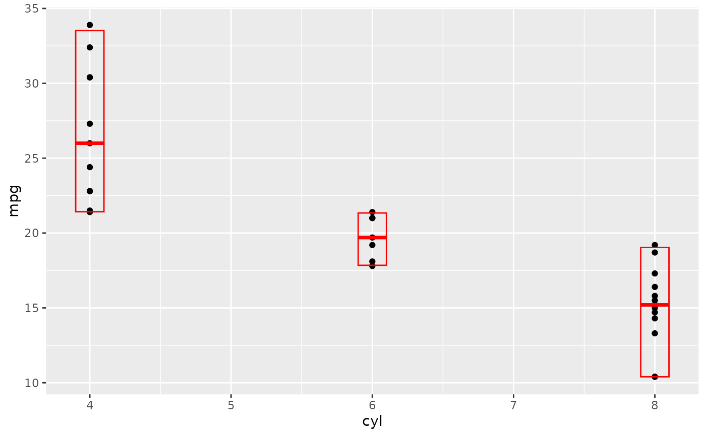# An example with highly skewed distributions: if (require("ggplot2movies")) { set.seed(596) mov <- movies[sample(nrow(movies), 1000), ] m2 <- ggplot(mov, aes(x = factor(round(rating)), y = votes)) + geom_point() m2 <- m2 + stat_summary( fun.data = "mean_cl_boot", geom = "crossbar", colour = "red", width = 0.3 ) + xlab("rating") m2 # Notice how the overplotting skews off visual perception of the mean # supplementing the raw data with summary statistics is _very_ important # Next, we'll look at votes on a log scale. # Transforming the scale means the data are transformed # first, after which statistics are computed: m2 + scale_y_log10() # Transforming the coordinate system occurs after the # statistic has been computed. This means we're calculating the summary on the raw data # and stretching the geoms onto the log scale. Compare the widths of the # standard errors. m2 + coord_trans(y="log10") }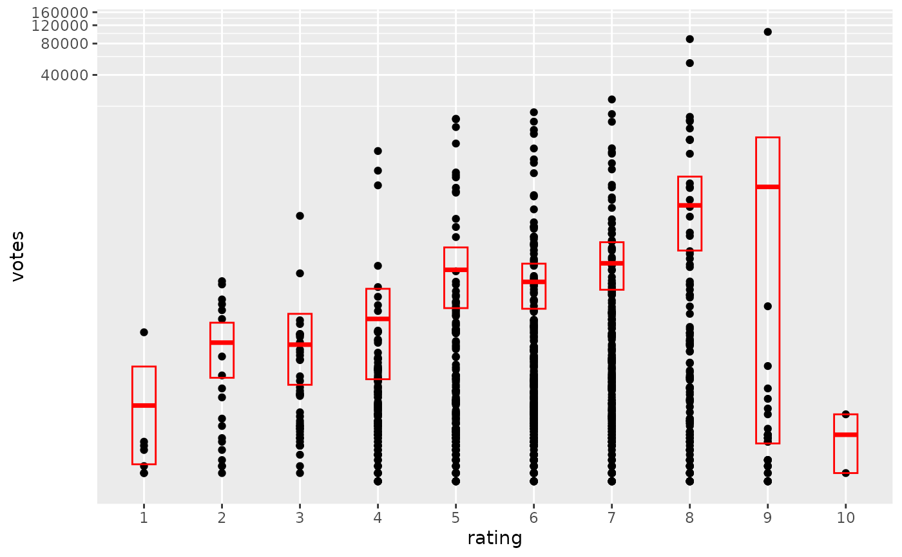# }